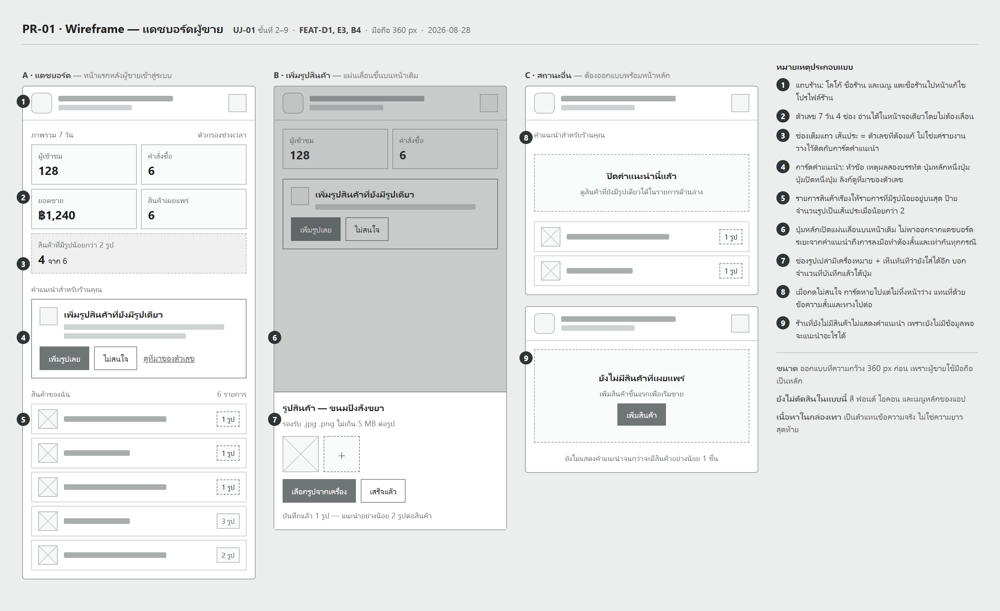

A shared e-commerce platform for student-run micro-businesses at MFU, with an AI advisor that turns the platform's own data into recommendations for sellers.
| A | Accounts & access | auth |
| B | Store & catalogue — products, photos, price, stock | CRUD |
| C | Buyer & orders | |
| D | Seller dashboard | dashboard |
| E | AI advisor — grounded recommendations | |
| F | Telemetry & experiment infrastructure | |
| G | Analysis | |
| H | Platform — deployment, external API | cloud API open |
| 01 | requirements · non-functional-requirements · product-backlog · feature-list |
| 02 | architecture · database-schema · api-spec · detailed-design |
| 02 | UJ-01 journey · PR-01 wireframe + prototype · ADR-0001 · ADR-0002 |
| 03 | hypotheses · analysis-plan (thesis) |
| 04 | TS-01 test spec |
REQ-B3 → PB-10 → FEAT-B4 → product.photo_added → TS-01-07
One chain per feature. The same event is the advisor's action_type target and step 9 of the journey.
| web | Next.js, TypeScript |
| api | Express, TypeScript |
| db | PostgreSQL via Prisma |
| advisor | Python — templates, no LLM (ADR-0002) |
| analysis | Python |
| deploy | Cloud, managed Postgres — provider open (D-1) |
action + event → one transaction → commit
| Zone | Tables | Policy |
|---|---|---|
| Commerce | User · Store · Product · ProductPhoto · Order · OrderItem | reshape freely |
| Telemetry | Event | append-only |
| Research | Experiment · Variant · Assignment · Recommendation | ask first |
acted = event(store, action_type) <= delivered_at + 7 days

| GET | /dashboard/metrics | dashboard.viewed |
| GET | /recommendations/current | recommendation.delivered |
| POST | /recommendations/:id/dismiss | recommendation.dismissed |
| POST | /products/:id/photos | product.photo_added |
delivered_at + action_type + store_id
→ event within 7 days → acted 0/1
→ rate per variant
| TS-01 | Assignment stable · snapshot frozen · 7-day boundary exact · no personal data · events immutable |
| ADR-0001 | Append-only events, written in the action's transaction |
| ADR-0002 | Advisor copy from templates, not an LLM |
| Open | D-1 hosting · D-2 auth · D-3 object storage |